OUTPUT SHAFT > DISASSEMBLY |
| 1. INSPECT 3RD GEAR THRUST CLEARANCE |
 |
Using a feeler gauge, measure the 3rd gear thrust clearance.
| 2. INSPECT 5TH GEAR THRUST CLEARANCE |
 |
Using a feeler gauge, measure the 5th gear thrust clearance.
| 3. INSPECT 2ND GEAR THRUST CLEARANCE |
 |
Using a feeler gauge, measure the 2nd gear thrust clearance.
| 4. INSPECT 1ST GEAR THRUST CLEARANCE |
 |
Using a feeler gauge, measure the 1st gear thrust clearance.
| 5. INSPECT 3RD GEAR RADIAL CLEARANCE |
 |
Using a dial indicator, measure the 3rd gear radial clearance.
| 6. INSPECT 5TH GEAR RADIAL CLEARANCE |
 |
Using a dial indicator, measure the 5th gear radial clearance.
| 7. INSPECT 2ND GEAR RADIAL CLEARANCE |
 |
Using a dial indicator, measure the 2nd gear radial clearance.
| 8. INSPECT 1ST GEAR RADIAL CLEARANCE |
 |
Using a dial indicator, measure the 1st gear radial clearance.
| 9. REMOVE REVERSE GEAR SNAP RING |
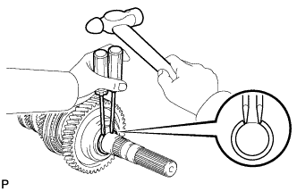 |
Using 2 screwdrivers and a hammer, tap out the snap ring.
| 10. REMOVE 1ST GEAR |
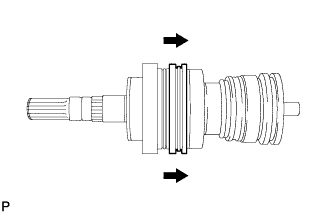 |
Shift the No. 1 transmission hub sleeve to the 2nd gear.
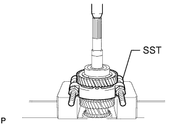 |
Using SST and a press, remove the bearing, 1st gear and synchronizer ring.
| 11. REMOVE 1ST GEAR NEEDLE ROLLER BEARING |
Remove the 1st gear needle roller bearing from the output shaft.
| 12. REMOVE NO. 1 SYNCHRONIZER RING SET |
Remove the No. 1 synchronizer ring from the 1st gear.
| 13. REMOVE NO. 1 CLUTCH HUB SHAFT SNAP RING |
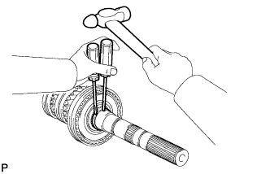 |
Using 2 screwdrivers and a hammer, tap out the snap ring.
| 14. REMOVE 2ND GEAR |
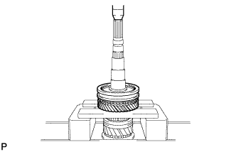 |
Using a press, remove the 2nd gear and synchronizer ring.
| 15. REMOVE 2ND GEAR NEEDLE ROLLER BEARING |
Remove the 2nd gear needle roller bearing from the output shaft.
| 16. REMOVE NO. 2 SYNCHRONIZER RING SET |
Remove the No. 2 synchronizer ring set from the 2nd gear.
| 17. REMOVE NO. 1 TRANSMISSION HUB SLEEVE |
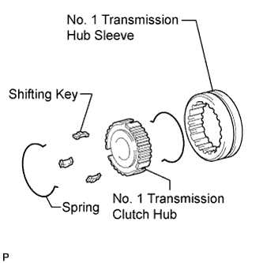 |
Remove the No. 1 transmission hub sleeve, 3 shifting keys and 2 springs from the No. 1 transmission clutch hub.
| 18. REMOVE NO. 2 CLUTCH HUB SETTING SHAFT SNAP RING |
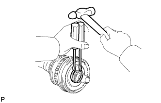 |
Using 2 screwdrivers and a hammer, tap out the snap ring.
| 19. REMOVE 3RD GEAR |
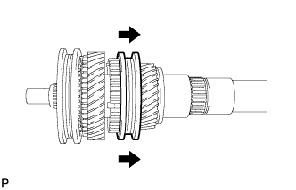 |
Shift the No. 3 transmission hub sleeve to the 5th gear.
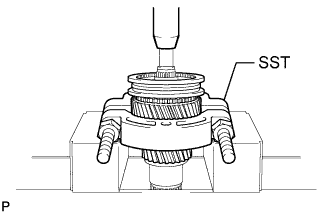 |
Using SST and a press, remove the 3rd gear and synchronizer ring.
| 20. REMOVE 3RD GEAR NEEDLE ROLLER BEARING |
Remove the 3rd gear needle roller bearing from the output shaft.
| 21. REMOVE NO. 3 SYNCHRONIZER RING SET |
Remove the No. 3 synchronizer ring set from the 3rd gear.
| 22. REMOVE NO. 2 TRANSMISSION HUB SLEEVE |
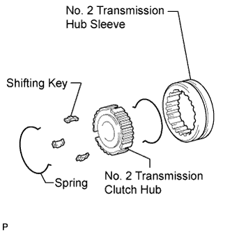 |
Remove the No. 2 transmission hub sleeve, 3 shifting keys and 2 springs from the No. 2 transmission clutch hub.
| 23. REMOVE NO. 3 TRANSMISSION CLUTCH HUB SHAFT SNAP RING |
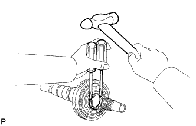 |
Using 2 screwdrivers and a hammer, tap out the snap ring.
| 24. REMOVE 5TH GEAR |
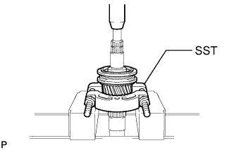 |
Using SST and a press, remove the 5th gear and synchronizer ring.
| 25. REMOVE 5TH COUNTER GEAR BEARING |
Remove the 5th counter gear bearing from the output shaft.
| 26. REMOVE NO. 3 SYNCHRONIZER RING SET |
Remove the No. 3 synchronizer ring from the 5th gear.
| 27. REMOVE NO. 3 TRANSMISSION HUB SLEEVE |
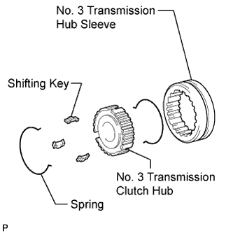 |
Remove the No. 3 transmission hub sleeve, 3 shifting keys and 2 springs from the No. 3 transmission clutch hub.